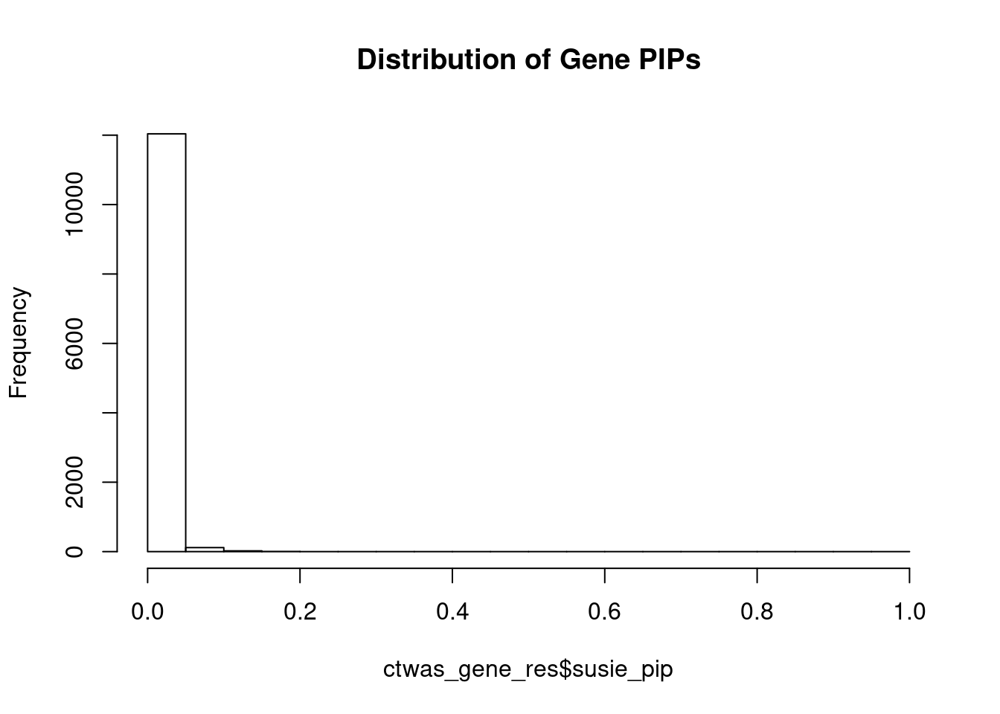
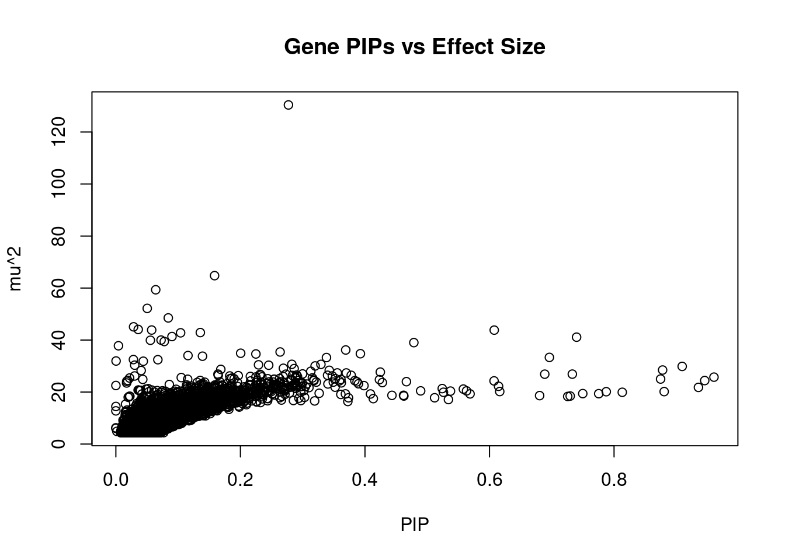
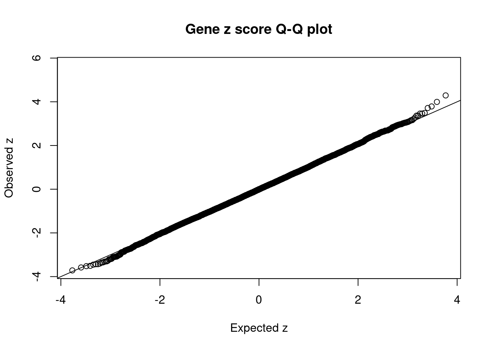
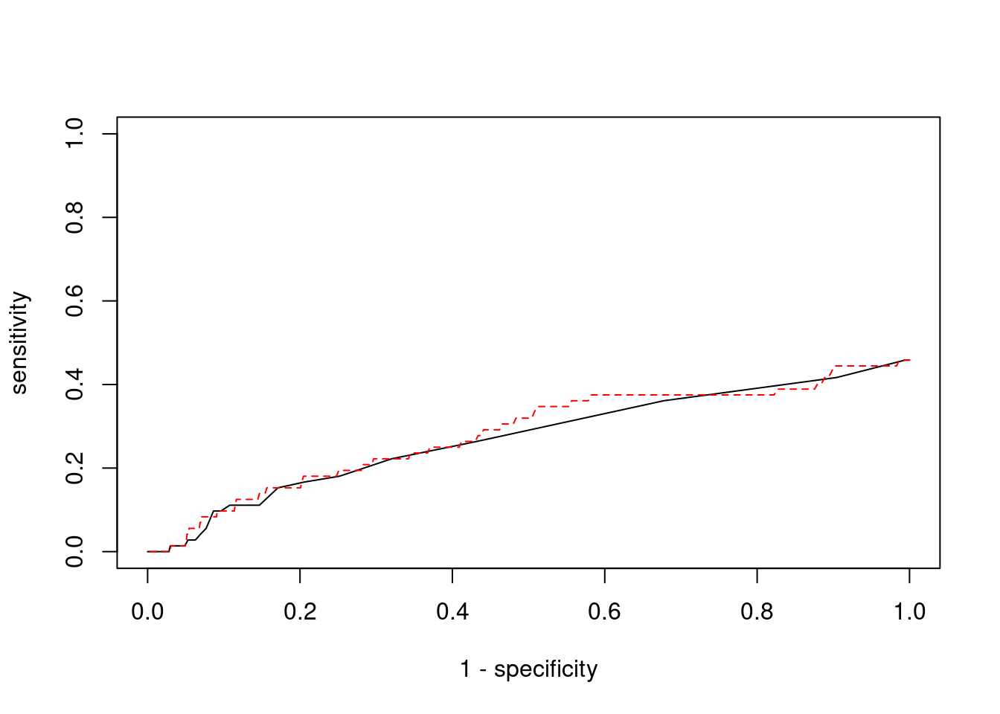

T2D - Adipose Visceral Omentum
sheng Qian
2021-2-6
Last updated: 2022-02-13
Checks: 6 1
Knit directory: cTWAS_analysis/
This reproducible R Markdown analysis was created with workflowr (version 1.6.2). The Checks tab describes the reproducibility checks that were applied when the results were created. The Past versions tab lists the development history.
Great! Since the R Markdown file has been committed to the Git repository, you know the exact version of the code that produced these results.
Great job! The global environment was empty. Objects defined in the global environment can affect the analysis in your R Markdown file in unknown ways. For reproduciblity it’s best to always run the code in an empty environment.
The command set.seed(20211220) was run prior to running the code in the R Markdown file. Setting a seed ensures that any results that rely on randomness, e.g. subsampling or permutations, are reproducible.
Great job! Recording the operating system, R version, and package versions is critical for reproducibility.
Nice! There were no cached chunks for this analysis, so you can be confident that you successfully produced the results during this run.
Using absolute paths to the files within your workflowr project makes it difficult for you and others to run your code on a different machine. Change the absolute path(s) below to the suggested relative path(s) to make your code more reproducible.
| absolute | relative |
|---|---|
| /project2/xinhe/shengqian/cTWAS/cTWAS_analysis/data/ | data |
| /project2/xinhe/shengqian/cTWAS/cTWAS_analysis/code/ctwas_config.R | code/ctwas_config.R |
Great! You are using Git for version control. Tracking code development and connecting the code version to the results is critical for reproducibility.
The results in this page were generated with repository version 87fee8b. See the Past versions tab to see a history of the changes made to the R Markdown and HTML files.
Note that you need to be careful to ensure that all relevant files for the analysis have been committed to Git prior to generating the results (you can use wflow_publish or wflow_git_commit). workflowr only checks the R Markdown file, but you know if there are other scripts or data files that it depends on. Below is the status of the Git repository when the results were generated:
Ignored files:
Ignored: .ipynb_checkpoints/
Untracked files:
Untracked: code/.ipynb_checkpoints/
Untracked: code/AF_out/
Untracked: code/BMI_out/
Untracked: code/T2D_out/
Untracked: code/ctwas_config.R
Untracked: code/mapping.R
Untracked: code/out/
Untracked: code/run_AF_analysis.sbatch
Untracked: code/run_AF_analysis.sh
Untracked: code/run_AF_ctwas_rss_LDR.R
Untracked: code/run_BMI_analysis.sbatch
Untracked: code/run_BMI_analysis.sh
Untracked: code/run_BMI_ctwas_rss_LDR.R
Untracked: code/run_T2D_analysis.sbatch
Untracked: code/run_T2D_analysis.sh
Untracked: code/run_T2D_ctwas_rss_LDR.R
Untracked: data/.ipynb_checkpoints/
Untracked: data/AF/
Untracked: data/BMI/
Untracked: data/T2D/
Untracked: data/UKBB/
Untracked: data/UKBB_SNPs_Info.text
Untracked: data/gene_OMIM.txt
Untracked: data/gene_pip_0.8.txt
Untracked: data/mashr_Heart_Atrial_Appendage.db
Untracked: data/summary_known_genes_annotations.xlsx
Untracked: data/untitled.txt
Note that any generated files, e.g. HTML, png, CSS, etc., are not included in this status report because it is ok for generated content to have uncommitted changes.
These are the previous versions of the repository in which changes were made to the R Markdown (analysis/T2D_Adipose_Visceral_Omentum.Rmd) and HTML (docs/T2D_Adipose_Visceral_Omentum.html) files. If you’ve configured a remote Git repository (see ?wflow_git_remote), click on the hyperlinks in the table below to view the files as they were in that past version.
| File | Version | Author | Date | Message |
|---|---|---|---|---|
| Rmd | 87fee8b | sq-96 | 2022-02-13 | update |
Introduction
Weight QC
qclist_all <- list()
qc_files <- paste0(results_dir, "/", list.files(results_dir, pattern="exprqc.Rd"))
for (i in 1:length(qc_files)){
load(qc_files[i])
chr <- unlist(strsplit(rev(unlist(strsplit(qc_files[i], "_")))[1], "[.]"))[1]
qclist_all[[chr]] <- cbind(do.call(rbind, lapply(qclist,unlist)), as.numeric(substring(chr,4)))
}
qclist_all <- data.frame(do.call(rbind, qclist_all))
colnames(qclist_all)[ncol(qclist_all)] <- "chr"
rm(qclist, wgtlist, z_gene_chr)
#number of imputed weights
nrow(qclist_all)[1] 12185#number of imputed weights by chromosome
table(qclist_all$chr)
1 2 3 4 5 6 7 8 9 10 11 12 13 14 15 16
1194 835 712 475 563 699 615 440 443 493 756 683 238 409 386 560
17 18 19 20 21 22
761 189 944 358 140 292 #number of imputed weights without missing variants
sum(qclist_all$nmiss==0)[1] 8998#proportion of imputed weights without missing variants
mean(qclist_all$nmiss==0)[1] 0.7384489Load ctwas results
Check convergence of parameters
library(ggplot2)
library(cowplot)
********************************************************Note: As of version 1.0.0, cowplot does not change the default ggplot2 theme anymore. To recover the previous behavior, execute:
theme_set(theme_cowplot())********************************************************load(paste0(results_dir, "/", analysis_id, "_ctwas.s2.susieIrssres.Rd"))
df <- data.frame(niter = rep(1:ncol(group_prior_rec), 2),
value = c(group_prior_rec[1,], group_prior_rec[2,]),
group = rep(c("Gene", "SNP"), each = ncol(group_prior_rec)))
df$group <- as.factor(df$group)
df$value[df$group=="SNP"] <- df$value[df$group=="SNP"]*thin #adjust parameter to account for thin argument
p_pi <- ggplot(df, aes(x=niter, y=value, group=group)) +
geom_line(aes(color=group)) +
geom_point(aes(color=group)) +
xlab("Iteration") + ylab(bquote(pi)) +
ggtitle("Prior mean") +
theme_cowplot()
df <- data.frame(niter = rep(1:ncol(group_prior_var_rec), 2),
value = c(group_prior_var_rec[1,], group_prior_var_rec[2,]),
group = rep(c("Gene", "SNP"), each = ncol(group_prior_var_rec)))
df$group <- as.factor(df$group)
p_sigma2 <- ggplot(df, aes(x=niter, y=value, group=group)) +
geom_line(aes(color=group)) +
geom_point(aes(color=group)) +
xlab("Iteration") + ylab(bquote(sigma^2)) +
ggtitle("Prior variance") +
theme_cowplot()
plot_grid(p_pi, p_sigma2)
#estimated group prior
estimated_group_prior <- group_prior_rec[,ncol(group_prior_rec)]
names(estimated_group_prior) <- c("gene", "snp")
estimated_group_prior["snp"] <- estimated_group_prior["snp"]*thin #adjust parameter to account for thin argument
print(estimated_group_prior) gene snp
0.0025614131 0.0001731345 #estimated group prior variance
estimated_group_prior_var <- group_prior_var_rec[,ncol(group_prior_var_rec)]
names(estimated_group_prior_var) <- c("gene", "snp")
print(estimated_group_prior_var) gene snp
4.847456 1.566893 #report sample size
print(sample_size)[1] 337159#report group size
group_size <- c(nrow(ctwas_gene_res), n_snps)
print(group_size)[1] 12185 7535010#estimated group PVE
estimated_group_pve <- estimated_group_prior_var*estimated_group_prior*group_size/sample_size #check PVE calculation
names(estimated_group_pve) <- c("gene", "snp")
print(estimated_group_pve) gene snp
0.0004487292 0.0060627844 #compare sum(PIP*mu2/sample_size) with above PVE calculation
c(sum(ctwas_gene_res$PVE),sum(ctwas_snp_res$PVE))[1] 0.00382862 0.10984297Genes with highest PIPs
#distribution of PIPs
hist(ctwas_gene_res$susie_pip, xlim=c(0,1), main="Distribution of Gene PIPs")
#genes with PIP>0.8 or 20 highest PIPs
head(ctwas_gene_res[order(-ctwas_gene_res$susie_pip),report_cols], max(sum(ctwas_gene_res$susie_pip>0.8), 20)) genename region_tag susie_pip mu2 PVE z
3645 CCND2 12_4 0.9946137 28.50621 8.409285e-05 5.657050
4051 DAW1 2_134 0.2557105 38.53316 2.922459e-05 3.995461
3945 KLHL7 7_20 0.2114448 35.56377 2.230335e-05 3.787363
7075 NUS1 6_78 0.1835593 34.68276 1.888232e-05 3.716370
14409 RP6-65G23.5 14_33 0.1742867 32.72766 1.691782e-05 3.369949
2121 NIPAL2 8_67 0.1635638 35.32732 1.713812e-05 -3.401950
8191 AGGF1 5_45 0.1619237 32.70607 1.570739e-05 -3.452706
13545 RP3-473L9.4 12_67 0.1553368 31.93831 1.471471e-05 -3.298735
8858 CCDC88B 11_36 0.1460633 31.69211 1.372959e-05 -3.360511
14565 LINC01126 2_27 0.1455878 33.69123 1.454812e-05 4.291921
6837 NPAS3 14_8 0.1353112 34.30489 1.376749e-05 -3.716549
9597 ARV1 1_118 0.1341710 31.39587 1.249385e-05 3.273664
12323 KCTD11 17_6 0.1333512 30.95776 1.224424e-05 3.073744
8090 YEATS2 3_112 0.1302892 31.31955 1.210289e-05 -3.202339
32 MTMR7 8_18 0.1291267 31.32164 1.199570e-05 -3.429825
6807 ABCB9 12_75 0.1274801 31.46364 1.189643e-05 3.159926
13809 IKBKE 1_105 0.1256552 30.94571 1.153310e-05 3.103061
14290 RP11-535A5.1 18_11 0.1253370 30.32443 1.127294e-05 -2.997627
11993 PHACTR4 1_19 0.1200516 31.70775 1.129012e-05 -3.507332
2524 HPS1 10_62 0.1167168 30.48916 1.055465e-05 3.123886
num_eqtl
3645 1
4051 2
3945 3
7075 1
14409 1
2121 3
8191 1
13545 1
8858 2
14565 2
6837 1
9597 2
12323 1
8090 1
32 1
6807 1
13809 2
14290 1
11993 4
2524 3Genes with largest effect sizes
#plot PIP vs effect size
plot(ctwas_gene_res$susie_pip, ctwas_gene_res$mu2, xlab="PIP", ylab="mu^2", main="Gene PIPs vs Effect Size")
#genes with 20 largest effect sizes
head(ctwas_gene_res[order(-ctwas_gene_res$mu2),report_cols],20) genename region_tag susie_pip mu2 PVE z
4051 DAW1 2_134 0.25571048 38.53316 2.922459e-05 3.995461
3945 KLHL7 7_20 0.21144483 35.56377 2.230335e-05 3.787363
2121 NIPAL2 8_67 0.16356382 35.32732 1.713812e-05 -3.401950
7075 NUS1 6_78 0.18355933 34.68276 1.888232e-05 3.716370
6837 NPAS3 14_8 0.13531118 34.30489 1.376749e-05 -3.716549
14565 LINC01126 2_27 0.14558776 33.69123 1.454812e-05 4.291921
14409 RP6-65G23.5 14_33 0.17428667 32.72766 1.691782e-05 3.369949
8191 AGGF1 5_45 0.16192374 32.70607 1.570739e-05 -3.452706
13545 RP3-473L9.4 12_67 0.15533683 31.93831 1.471471e-05 -3.298735
11993 PHACTR4 1_19 0.12005158 31.70775 1.129012e-05 -3.507332
8858 CCDC88B 11_36 0.14606327 31.69211 1.372959e-05 -3.360511
6807 ABCB9 12_75 0.12748008 31.46364 1.189643e-05 3.159926
9597 ARV1 1_118 0.13417100 31.39587 1.249385e-05 3.273664
32 MTMR7 8_18 0.12912666 31.32164 1.199570e-05 -3.429825
8090 YEATS2 3_112 0.13028920 31.31955 1.210289e-05 -3.202339
13443 AP001257.1 11_34 0.09367297 31.20250 8.668999e-06 3.366387
12319 ZNF888 19_36 0.10353254 31.03883 9.531198e-06 -3.029676
12323 KCTD11 17_6 0.13335121 30.95776 1.224424e-05 3.073744
13809 IKBKE 1_105 0.12565524 30.94571 1.153310e-05 3.103061
2524 HPS1 10_62 0.11671675 30.48916 1.055465e-05 3.123886
num_eqtl
4051 2
3945 3
2121 3
7075 1
6837 1
14565 2
14409 1
8191 1
13545 1
11993 4
8858 2
6807 1
9597 2
32 1
8090 1
13443 2
12319 1
12323 1
13809 2
2524 3Genes with highest PVE
#genes with 20 highest pve
head(ctwas_gene_res[order(-ctwas_gene_res$PVE),report_cols],20) genename region_tag susie_pip mu2 PVE z
3645 CCND2 12_4 0.9946137 28.50621 8.409285e-05 5.657050
4051 DAW1 2_134 0.2557105 38.53316 2.922459e-05 3.995461
3945 KLHL7 7_20 0.2114448 35.56377 2.230335e-05 3.787363
7075 NUS1 6_78 0.1835593 34.68276 1.888232e-05 3.716370
2121 NIPAL2 8_67 0.1635638 35.32732 1.713812e-05 -3.401950
14409 RP6-65G23.5 14_33 0.1742867 32.72766 1.691782e-05 3.369949
8191 AGGF1 5_45 0.1619237 32.70607 1.570739e-05 -3.452706
13545 RP3-473L9.4 12_67 0.1553368 31.93831 1.471471e-05 -3.298735
14565 LINC01126 2_27 0.1455878 33.69123 1.454812e-05 4.291921
6837 NPAS3 14_8 0.1353112 34.30489 1.376749e-05 -3.716549
8858 CCDC88B 11_36 0.1460633 31.69211 1.372959e-05 -3.360511
9597 ARV1 1_118 0.1341710 31.39587 1.249385e-05 3.273664
12323 KCTD11 17_6 0.1333512 30.95776 1.224424e-05 3.073744
8090 YEATS2 3_112 0.1302892 31.31955 1.210289e-05 -3.202339
32 MTMR7 8_18 0.1291267 31.32164 1.199570e-05 -3.429825
6807 ABCB9 12_75 0.1274801 31.46364 1.189643e-05 3.159926
13809 IKBKE 1_105 0.1256552 30.94571 1.153310e-05 3.103061
11993 PHACTR4 1_19 0.1200516 31.70775 1.129012e-05 -3.507332
14290 RP11-535A5.1 18_11 0.1253370 30.32443 1.127294e-05 -2.997627
2524 HPS1 10_62 0.1167168 30.48916 1.055465e-05 3.123886
num_eqtl
3645 1
4051 2
3945 3
7075 1
2121 3
14409 1
8191 1
13545 1
14565 2
6837 1
8858 2
9597 2
12323 1
8090 1
32 1
6807 1
13809 2
11993 4
14290 1
2524 3Genes with largest z scores
#genes with 20 largest z scores
head(ctwas_gene_res[order(-abs(ctwas_gene_res$z)),report_cols],20) genename region_tag susie_pip mu2 PVE z
3645 CCND2 12_4 0.99461370 28.50621 8.409285e-05 5.657050
14565 LINC01126 2_27 0.14558776 33.69123 1.454812e-05 4.291921
4051 DAW1 2_134 0.25571048 38.53316 2.922459e-05 3.995461
3945 KLHL7 7_20 0.21144483 35.56377 2.230335e-05 3.787363
6837 NPAS3 14_8 0.13531118 34.30489 1.376749e-05 -3.716549
7075 NUS1 6_78 0.18355933 34.68276 1.888232e-05 3.716370
7378 AP3S2 15_41 0.10383473 28.94874 8.915332e-06 -3.581700
1715 RBX1 22_17 0.08266243 26.75251 6.559005e-06 -3.521311
11993 PHACTR4 1_19 0.12005158 31.70775 1.129012e-05 -3.507332
12306 PPP1CB 2_17 0.07525356 26.87607 5.998712e-06 3.490303
9476 DNAJB7 22_17 0.07386308 25.78841 5.649595e-06 3.462008
5668 CNOT6L 4_52 0.10237070 29.01722 8.810423e-06 3.460483
8191 AGGF1 5_45 0.16192374 32.70607 1.570739e-05 -3.452706
13095 ARPIN 15_41 0.10007519 28.63082 8.498172e-06 -3.432049
32 MTMR7 8_18 0.12912666 31.32164 1.199570e-05 -3.429825
2121 NIPAL2 8_67 0.16356382 35.32732 1.713812e-05 -3.401950
14409 RP6-65G23.5 14_33 0.17428667 32.72766 1.691782e-05 3.369949
13443 AP001257.1 11_34 0.09367297 31.20250 8.668999e-06 3.366387
8858 CCDC88B 11_36 0.14606327 31.69211 1.372959e-05 -3.360511
10661 SH2D7 15_36 0.07646632 26.65208 6.044585e-06 -3.348970
num_eqtl
3645 1
14565 2
4051 2
3945 3
6837 1
7075 1
7378 1
1715 1
11993 4
12306 1
9476 1
5668 1
8191 1
13095 2
32 1
2121 3
14409 1
13443 2
8858 2
10661 1Comparing z scores and PIPs
#set nominal signifiance threshold for z scores
alpha <- 0.05
#bonferroni adjusted threshold for z scores
sig_thresh <- qnorm(1-(alpha/nrow(ctwas_gene_res)/2), lower=T)
#Q-Q plot for z scores
obs_z <- ctwas_gene_res$z[order(ctwas_gene_res$z)]
exp_z <- qnorm((1:nrow(ctwas_gene_res))/nrow(ctwas_gene_res))
plot(exp_z, obs_z, xlab="Expected z", ylab="Observed z", main="Gene z score Q-Q plot")
abline(a=0,b=1)
#plot z score vs PIP
plot(abs(ctwas_gene_res$z), ctwas_gene_res$susie_pip, xlab="abs(z)", ylab="PIP")
abline(v=sig_thresh, col="red", lty=2)
#proportion of significant z scores
mean(abs(ctwas_gene_res$z) > sig_thresh)[1] 8.206812e-05#genes with most significant z scores
head(ctwas_gene_res[order(-abs(ctwas_gene_res$z)),report_cols],20) genename region_tag susie_pip mu2 PVE z
3645 CCND2 12_4 0.99461370 28.50621 8.409285e-05 5.657050
14565 LINC01126 2_27 0.14558776 33.69123 1.454812e-05 4.291921
4051 DAW1 2_134 0.25571048 38.53316 2.922459e-05 3.995461
3945 KLHL7 7_20 0.21144483 35.56377 2.230335e-05 3.787363
6837 NPAS3 14_8 0.13531118 34.30489 1.376749e-05 -3.716549
7075 NUS1 6_78 0.18355933 34.68276 1.888232e-05 3.716370
7378 AP3S2 15_41 0.10383473 28.94874 8.915332e-06 -3.581700
1715 RBX1 22_17 0.08266243 26.75251 6.559005e-06 -3.521311
11993 PHACTR4 1_19 0.12005158 31.70775 1.129012e-05 -3.507332
12306 PPP1CB 2_17 0.07525356 26.87607 5.998712e-06 3.490303
9476 DNAJB7 22_17 0.07386308 25.78841 5.649595e-06 3.462008
5668 CNOT6L 4_52 0.10237070 29.01722 8.810423e-06 3.460483
8191 AGGF1 5_45 0.16192374 32.70607 1.570739e-05 -3.452706
13095 ARPIN 15_41 0.10007519 28.63082 8.498172e-06 -3.432049
32 MTMR7 8_18 0.12912666 31.32164 1.199570e-05 -3.429825
2121 NIPAL2 8_67 0.16356382 35.32732 1.713812e-05 -3.401950
14409 RP6-65G23.5 14_33 0.17428667 32.72766 1.691782e-05 3.369949
13443 AP001257.1 11_34 0.09367297 31.20250 8.668999e-06 3.366387
8858 CCDC88B 11_36 0.14606327 31.69211 1.372959e-05 -3.360511
10661 SH2D7 15_36 0.07646632 26.65208 6.044585e-06 -3.348970
num_eqtl
3645 1
14565 2
4051 2
3945 3
6837 1
7075 1
7378 1
1715 1
11993 4
12306 1
9476 1
5668 1
8191 1
13095 2
32 1
2121 3
14409 1
13443 2
8858 2
10661 1Sensitivity, specificity and precision for silver standard genes
library("readxl")
known_annotations <- read_xlsx("data/summary_known_genes_annotations.xlsx", sheet="T2D")
known_annotations <- unique(known_annotations$`Gene Symbol`)
unrelated_genes <- ctwas_gene_res$genename[!(ctwas_gene_res$genename %in% known_annotations)]
#number of genes in known annotations
print(length(known_annotations))[1] 72#number of genes in known annotations with imputed expression
print(sum(known_annotations %in% ctwas_gene_res$genename))[1] 33#assign ctwas, TWAS, and bystander genes
ctwas_genes <- ctwas_gene_res$genename[ctwas_gene_res$susie_pip>0.8]
twas_genes <- ctwas_gene_res$genename[abs(ctwas_gene_res$z)>sig_thresh]
novel_genes <- ctwas_genes[!(ctwas_genes %in% twas_genes)]
#significance threshold for TWAS
print(sig_thresh)[1] 4.606075#number of ctwas genes
length(ctwas_genes)[1] 1#number of TWAS genes
length(twas_genes)[1] 1#show novel genes (ctwas genes with not in TWAS genes)
ctwas_gene_res[ctwas_gene_res$genename %in% novel_genes,report_cols][1] genename region_tag susie_pip mu2 PVE z num_eqtl
<0 rows> (or 0-length row.names)#sensitivity / recall
sensitivity <- rep(NA,2)
names(sensitivity) <- c("ctwas", "TWAS")
sensitivity["ctwas"] <- sum(ctwas_genes %in% known_annotations)/length(known_annotations)
sensitivity["TWAS"] <- sum(twas_genes %in% known_annotations)/length(known_annotations)
sensitivityctwas TWAS
0 0 #specificity
specificity <- rep(NA,2)
names(specificity) <- c("ctwas", "TWAS")
specificity["ctwas"] <- sum(!(unrelated_genes %in% ctwas_genes))/length(unrelated_genes)
specificity["TWAS"] <- sum(!(unrelated_genes %in% twas_genes))/length(unrelated_genes)
specificity ctwas TWAS
0.9999177 0.9999177 #precision / PPV
precision <- rep(NA,2)
names(precision) <- c("ctwas", "TWAS")
precision["ctwas"] <- sum(ctwas_genes %in% known_annotations)/length(ctwas_genes)
precision["TWAS"] <- sum(twas_genes %in% known_annotations)/length(twas_genes)
precisionctwas TWAS
0 0 #ROC curves
pip_range <- (0:1000)/1000
sensitivity <- rep(NA, length(pip_range))
specificity <- rep(NA, length(pip_range))
for (index in 1:length(pip_range)){
pip <- pip_range[index]
ctwas_genes <- ctwas_gene_res$genename[ctwas_gene_res$susie_pip>=pip]
sensitivity[index] <- sum(ctwas_genes %in% known_annotations)/length(known_annotations)
specificity[index] <- sum(!(unrelated_genes %in% ctwas_genes))/length(unrelated_genes)
}
plot(1-specificity, sensitivity, type="l", xlim=c(0,1), ylim=c(0,1))
sig_thresh_range <- seq(from=0, to=max(abs(ctwas_gene_res$z)), length.out=length(pip_range))
for (index in 1:length(sig_thresh_range)){
sig_thresh_plot <- sig_thresh_range[index]
twas_genes <- ctwas_gene_res$genename[abs(ctwas_gene_res$z)>=sig_thresh_plot]
sensitivity[index] <- sum(twas_genes %in% known_annotations)/length(known_annotations)
specificity[index] <- sum(!(unrelated_genes %in% twas_genes))/length(unrelated_genes)
}
lines(1-specificity, sensitivity, xlim=c(0,1), ylim=c(0,1), col="red", lty=2)
Sensitivity, specificity and precision for silver standard genes - bystanders only
This section first uses all silver standard genes to identify bystander genes within 1Mb. The silver standard and bystander gene lists are then subset to only genes with imputed expression in this analysis. Then, the ctwas and TWAS gene lists from this analysis are subset to only genes that are in the (subset) silver standard and bystander genes. These gene lists are then used to compute sensitivity, specificity and precision for ctwas and TWAS.
library(biomaRt)
library(GenomicRanges)Loading required package: stats4Loading required package: BiocGenericsLoading required package: parallel
Attaching package: 'BiocGenerics'The following objects are masked from 'package:parallel':
clusterApply, clusterApplyLB, clusterCall, clusterEvalQ,
clusterExport, clusterMap, parApply, parCapply, parLapply,
parLapplyLB, parRapply, parSapply, parSapplyLBThe following objects are masked from 'package:stats':
IQR, mad, sd, var, xtabsThe following objects are masked from 'package:base':
anyDuplicated, append, as.data.frame, basename, cbind, colnames,
dirname, do.call, duplicated, eval, evalq, Filter, Find, get, grep,
grepl, intersect, is.unsorted, lapply, Map, mapply, match, mget,
order, paste, pmax, pmax.int, pmin, pmin.int, Position, rank,
rbind, Reduce, rownames, sapply, setdiff, sort, table, tapply,
union, unique, unsplit, which, which.max, which.minLoading required package: S4Vectors
Attaching package: 'S4Vectors'The following object is masked from 'package:base':
expand.gridLoading required package: IRangesLoading required package: GenomeInfoDbensembl <- useEnsembl(biomart="ENSEMBL_MART_ENSEMBL", dataset="hsapiens_gene_ensembl")
G_list <- getBM(filters= "chromosome_name", attributes= c("hgnc_symbol","chromosome_name","start_position","end_position","gene_biotype"), values=1:22, mart=ensembl)
G_list <- G_list[G_list$hgnc_symbol!="",]
G_list <- G_list[G_list$gene_biotype %in% c("protein_coding","lncRNA"),]
G_list$start <- G_list$start_position
G_list$end <- G_list$end_position
G_list_granges <- makeGRangesFromDataFrame(G_list, keep.extra.columns=T)
known_annotations_positions <- G_list[G_list$hgnc_symbol %in% known_annotations,]
half_window <- 1000000
known_annotations_positions$start <- known_annotations_positions$start_position - half_window
known_annotations_positions$end <- known_annotations_positions$end_position + half_window
known_annotations_positions$start[known_annotations_positions$start<1] <- 1
known_annotations_granges <- makeGRangesFromDataFrame(known_annotations_positions, keep.extra.columns=T)
bystanders <- findOverlaps(known_annotations_granges,G_list_granges)
bystanders <- unique(subjectHits(bystanders))
bystanders <- G_list$hgnc_symbol[bystanders]
bystanders <- bystanders[!(bystanders %in% known_annotations)]
unrelated_genes <- bystanders
#number of genes in known annotations
print(length(known_annotations))[1] 72#number of genes in known annotations with imputed expression
print(sum(known_annotations %in% ctwas_gene_res$genename))[1] 33#number of bystander genes
print(length(unrelated_genes))[1] 1847#number of bystander genes with imputed expression
print(sum(unrelated_genes %in% ctwas_gene_res$genename))[1] 949#remove genes without imputed expression from gene lists
known_annotations <- known_annotations[known_annotations %in% ctwas_gene_res$genename]
unrelated_genes <- unrelated_genes[unrelated_genes %in% ctwas_gene_res$genename]
#assign ctwas and TWAS genes
ctwas_genes <- ctwas_gene_res$genename[ctwas_gene_res$susie_pip>0.8]
twas_genes <- ctwas_gene_res$genename[abs(ctwas_gene_res$z)>sig_thresh]
#significance threshold for TWAS
print(sig_thresh)[1] 4.606075#number of ctwas genes
length(ctwas_genes)[1] 1#number of ctwas genes in known annotations or bystanders
sum(ctwas_genes %in% c(known_annotations, unrelated_genes))[1] 0#number of ctwas genes
length(twas_genes)[1] 1#number of TWAS genes
sum(twas_genes %in% c(known_annotations, unrelated_genes))[1] 0#remove genes not in known or bystander lists from results
ctwas_genes <- ctwas_genes[ctwas_genes %in% c(known_annotations, unrelated_genes)]
twas_genes <- twas_genes[twas_genes %in% c(known_annotations, unrelated_genes)]
#sensitivity / recall
sensitivity <- rep(NA,2)
names(sensitivity) <- c("ctwas", "TWAS")
sensitivity["ctwas"] <- sum(ctwas_genes %in% known_annotations)/length(known_annotations)
sensitivity["TWAS"] <- sum(twas_genes %in% known_annotations)/length(known_annotations)
sensitivityctwas TWAS
0 0 #specificity
specificity <- rep(NA,2)
names(specificity) <- c("ctwas", "TWAS")
specificity["ctwas"] <- sum(!(unrelated_genes %in% ctwas_genes))/length(unrelated_genes)
specificity["TWAS"] <- sum(!(unrelated_genes %in% twas_genes))/length(unrelated_genes)
specificityctwas TWAS
1 1 #precision / PPV
precision <- rep(NA,2)
names(precision) <- c("ctwas", "TWAS")
precision["ctwas"] <- sum(ctwas_genes %in% known_annotations)/length(ctwas_genes)
precision["TWAS"] <- sum(twas_genes %in% known_annotations)/length(twas_genes)
precisionctwas TWAS
NaN NaN
sessionInfo()R version 3.6.1 (2019-07-05)
Platform: x86_64-pc-linux-gnu (64-bit)
Running under: Scientific Linux 7.4 (Nitrogen)
Matrix products: default
BLAS/LAPACK: /software/openblas-0.2.19-el7-x86_64/lib/libopenblas_haswellp-r0.2.19.so
locale:
[1] LC_CTYPE=en_US.UTF-8 LC_NUMERIC=C
[3] LC_TIME=en_US.UTF-8 LC_COLLATE=en_US.UTF-8
[5] LC_MONETARY=en_US.UTF-8 LC_MESSAGES=en_US.UTF-8
[7] LC_PAPER=en_US.UTF-8 LC_NAME=C
[9] LC_ADDRESS=C LC_TELEPHONE=C
[11] LC_MEASUREMENT=en_US.UTF-8 LC_IDENTIFICATION=C
attached base packages:
[1] parallel stats4 stats graphics grDevices utils datasets
[8] methods base
other attached packages:
[1] GenomicRanges_1.36.1 GenomeInfoDb_1.20.0 IRanges_2.18.1
[4] S4Vectors_0.22.1 BiocGenerics_0.30.0 biomaRt_2.40.1
[7] readxl_1.3.1 cowplot_1.0.0 ggplot2_3.3.5
[10] workflowr_1.6.2
loaded via a namespace (and not attached):
[1] Rcpp_1.0.7 prettyunits_1.1.1 assertthat_0.2.1
[4] rprojroot_2.0.2 digest_0.6.29 utf8_1.2.2
[7] R6_2.5.1 cellranger_1.1.0 RSQLite_2.2.8
[10] evaluate_0.14 httr_1.4.2 highr_0.9
[13] pillar_1.6.4 zlibbioc_1.30.0 progress_1.2.2
[16] rlang_0.4.12 curl_4.3.2 data.table_1.14.2
[19] whisker_0.3-2 jquerylib_0.1.4 blob_1.2.2
[22] rmarkdown_2.11 labeling_0.4.2 stringr_1.4.0
[25] RCurl_1.98-1.5 bit_4.0.4 munsell_0.5.0
[28] compiler_3.6.1 httpuv_1.5.1 xfun_0.29
[31] pkgconfig_2.0.3 htmltools_0.5.2 tidyselect_1.1.1
[34] GenomeInfoDbData_1.2.1 tibble_3.1.6 XML_3.99-0.3
[37] fansi_0.5.0 crayon_1.4.2 dplyr_1.0.7
[40] withr_2.4.3 later_0.8.0 bitops_1.0-7
[43] grid_3.6.1 gtable_0.3.0 lifecycle_1.0.1
[46] DBI_1.1.1 git2r_0.26.1 magrittr_2.0.1
[49] scales_1.1.1 stringi_1.7.6 cachem_1.0.6
[52] XVector_0.24.0 farver_2.1.0 fs_1.5.2
[55] promises_1.0.1 ellipsis_0.3.2 generics_0.1.1
[58] vctrs_0.3.8 tools_3.6.1 bit64_4.0.5
[61] Biobase_2.44.0 glue_1.5.1 purrr_0.3.4
[64] hms_1.1.1 fastmap_1.1.0 yaml_2.2.1
[67] AnnotationDbi_1.46.0 colorspace_2.0-2 memoise_2.0.1
[70] knitr_1.36